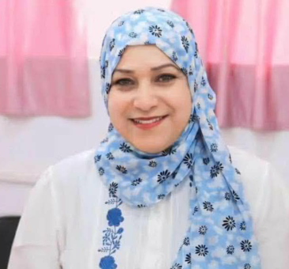
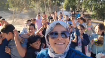
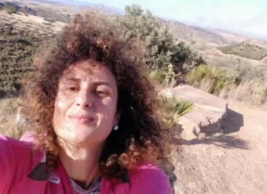
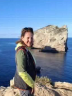

Meet Our Teachers
Teachers Presentation
Get to know the teachers participating in our eTwinning project. Each teacher introduces themselves, their role, their interests, and what they are excited to share with our partner school.

Saoussen Sendi
I am a French teacher (Distinguished Senior Teacher) holding a Master's Degree in French Language and Literature.
I have achieved the following distinctions:
Creative Teacher title on the Tadarok platform.
Expert title on the Monprof platform
Microsoft Certified Innovative Educator Expert (MIE Expert).
Additionally, I serve as a Genially Ambassador and a Wakelet Leader. I am also a trainer specializing in the integration of modern technology and Artificial Intelligence in education.
My other accolades include:
- Second Prize at the National Photography and Cinema Festival 'Flash de sensibilisation' (Awareness Flash)
- Two Quality Label certificates and the National Prize for eTwinning projects
- An Intellectual Property Teacher certificate from the 'Innovation, Creativity and Intellectual Property Program for Teachers and Educators in Arab Cuntries'.

Radhia
'Hi my name is Radhia' 'Im french teacher and the coordinator of cultural activities at the school. I received st prise in theater and the national award for etwinning. I have also earned the Quality Label several times. I am happy to work with you.

Dina Valenti
Dear colleagues, as you can see, you are behind me, South-East Sicily, heading towards Tunisia. My name is Dina Valenti, and I teach English and French in middle school. My personal and professional experiences have given me the opportunity to embark on edifying and enriching journeys.

Katia Longo
Hello everyone, my name is Katia Longo. I am a primary school teacher from Belpasso, in the province of Catania, and I have been teaching for about 30 years. I have always loved my job and I have dedicated myself to it.